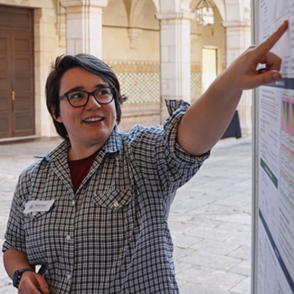

Assistant Professor @ University of Cagliari
Maura Pintor is an Assistant Professor at the PRA Lab in the Department of Electrical and Electronic Engineering at the University of Cagliari, Italy. She received her PhD in Electronic and Computer Engineering from the University of Cagliari in 2022.
Her research focuses on adversarial machine learning, with a particular emphasis on evaluating, debugging, and improving the robustness of machine learning systems. Her work aims to make AI models more reliable, secure, and trustworthy in real-world settings.
She serves as an Area Chair for NeurIPS and as an Associate Editor for Pattern Recognition, and she is a Consulting Associate Editor for the IEEE Transactions on Information Forensics and Security (TIFS). She is a member of IEEE, the IEEE Information Forensics and Security Technical Committee, IAPR, and ELLIS. She is also the main maintainer of the open-source library SecML-Torch, a framework for evaluating the adversarial robustness of deep learning models.
Email: maura.pintor@unica.it
GitHub: github.com/maurapintor